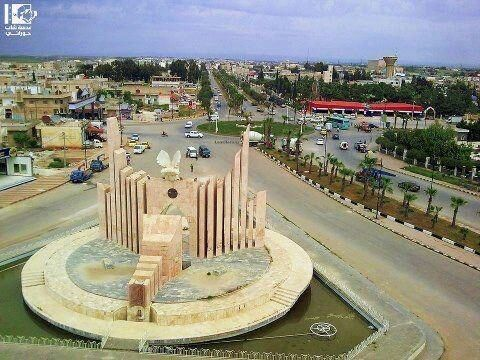

محافظة درعا
: تفاصيل عن مجافظة درعا
درعا مدينة سورية، تقع في أقصى جنوب سوريا بالقرب من الحدود السورية الأردنية. تعتبر مدينة درعا اهم مدينة في حوران الذي يمتد من جنوب دمشق في سوريا إلى جبال عجلون في الأردن.
تُعدّ واحدة من أعرق مدن العالم القديم، حيث تمتد جذورها إلى الألف الثالث قبل الميلاد
